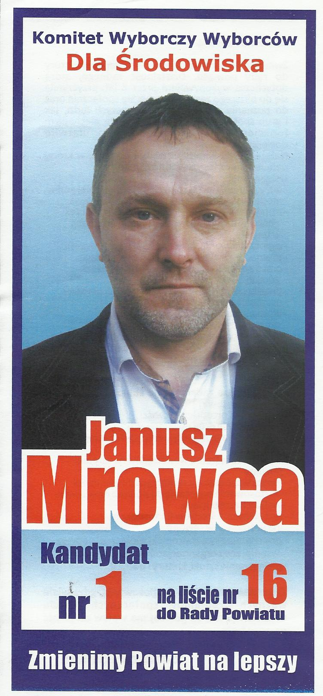

Janusz Mrowca
Działacz NSZZ Solidarność od roku 1949.
Były przewodniczący rady w gminie Łukowica oraz NIE doszły radny powiatu Limanowskiego.
Aktywny przewodnik PTTK oznaczony orderem za odnaleźenie legendarnego Grodziska na górze Łyżka
807 m.n.p.m
